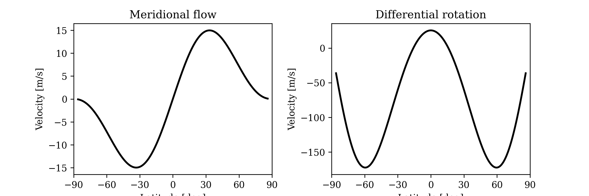
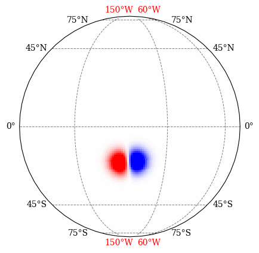

Theory and numerical method
This manual sets out the physical problem sft2d solves, the numerical scheme
used to solve it, and — importantly — the tests and example notebooks that
verify each part. References are collected at the end.
1. The surface flux transport equation
Surface flux transport (SFT) treats the radial photospheric field \(B_r(\theta,\phi,t)\) as a passive scalar advected by prescribed axisymmetric surface flows and dispersed by a turbulent (supergranular) diffusion, with new flux added by emerging active regions (Leighton 1964; DeVore, Boris & Sheeley 1984; Wang, Nash & Sheeley 1989; Sheeley 2005; Mackay & Yeates 2012; Jiang et al. 2014). In spherical coordinates — colatitude \(\theta\), longitude \(\phi\), on a sphere of radius \(R_\odot\) — it reads
The terms are, in order: meridional advection by the poleward flow \(u_\theta\), differential rotation \(\Omega(\theta)\), supergranular diffusion with diffusivity \(\eta\), a source \(S\) for emerging flux, and an optional linear decay \(-B_r/\tau\) representing unmodelled radial/3-D diffusion (Schrijver et al. 2002; Baumann et al. 2006). The model assumes no back-reaction of the field on the flows.
The two advective terms conserve total signed flux; diffusion conserves it and relaxes the field toward a potential (dipole-dominated) polar configuration.
2. Transport ingredients
Meridional flow. meridional_flow(grid, peak_speed, profile=...) returns the
colatitude velocity \(u_\theta\); a positive peak_speed is poleward
(so \(u_\theta<0\) in the north, \(>0\) in the south). Two profiles are
provided:
"yeates2020"(default): \(u_\theta \propto \sin(\lambda)\cos^{p}(\lambda)\) with \(p=2.33\), peaking near \(\pm 45^\circ\) (Yeates 2020);"schuessler-baumann": \(u_\theta \propto -\sin(2\lambda)\,e^{\pi(1-2|\lambda|/\pi)}\), the profile used in Yeates’s data-driven code (Yeates et al. 2015; cf. Baumann et al. 2004), which is weaker at mid-latitudes and falls off faster toward the poles (typical peak \(\sim 11\) m/s).
{kind=link}

Meridional-flow profile.
Differential rotation. differential_rotation(grid) uses a Snodgrass-type
profile (Snodgrass 1983),
\(\Omega(\theta)=A + B\cos^2\theta + C\cos^4\theta\), in the Carrington frame
by default.
Diffusivity. \(\eta\) is the effective supergranular diffusivity, of
order \(250\)–\(600\) km²/s in the literature
(van Ballegooijen, Cartledge & Priest 1998;
Jiang et al. 2014). It is passed to
evolve in SI units (m²/s); a scalar, a latitude profile, or a full map are all
accepted.
3. The source term: emerging flux
New flux enters as idealized bipolar magnetic regions (BMRs). Two analytic shapes are available, both flux-normalised to a requested total unsigned flux \(\Phi\) against the true finite-volume cell areas.
3a. Two-Gaussian bipole — make_bmr
A pair of opposite-polarity Gaussians is placed on the sphere, separated by an angular distance \(\Delta\), tilted by \(\alpha\) from the local east–west direction (Joy’s law) with polarity signs from Hale’s law. The centres are built with a 3-D tangent-basis rotation and the Gaussian is evaluated with the true great-circle angle \(\beta\) to each centre (so the spots are undistorted at high latitude):
with \(\sigma\) the polarity width and \(s=\pm1\) the Hale signs. The signed tilt (positive in the north, negative in the south) places the leading polarity equatorward in both hemispheres.
{kind=link}

An idealized flux-normalised BMR.
3b. Yeates bipole — make_bmr_yeates
An alternative single smooth antisymmetric bipole with a continuous
polarity-inversion line, following the form used in the sharps-bmrs catalogue
(Yeates et al. 2007; Yeates 2020). In a frame
rotated so the bipole lies on the equator, untilted,
truncated where \(\xi>9\), with width \(w=0.56\,\Delta\) and \((\phi_b,\lambda_b)\) the bipole-frame longitude/latitude. This is the natural shape when driving from a catalogue whose separation and tilt are fitted from magnetograms — no Joy or Hale assumption is applied, the fitted tilt carries the orientation.
3c. Observationally driven sources
ARSourceturns the bundled RGO sunspot record (sunspot_data_rgo_1901_2025.csv, 1901–2025) into daily flux-normalised two-Gaussian BMRs, with Joy’s-law tilt and Hale polarity inferred from the cycle.SHARPSourcereads an HMI/SHARPS idealized-BMR catalogue (thebmrsharps_evolformat, HMI era) and inserts Yeates bipoles using the region’s measured flux and fitted separation and tilt. It reads both headed and headerless dumps and de-duplicates repeat detections by maximum flux.
Both are callables source(day, field, grid) compatible with evolve, so free,
BMR-driven, and (via the assimilate= hook) data-assimilative runs share one
driver.
4. Numerical method
The solver is a conservative finite-volume scheme designed so that the area-weighted total flux is conserved to machine precision and the calibration does not depend on resolution.
Mesh (grid.py). A cell-centred colatitude mesh whose first and last cells
are genuine spherical polar caps (there is no clipped/excluded polar
region), and n_phi unique longitude cells with periodicity handled by
numpy.roll. Cell areas are the exact integral of \(\sin\theta\), so they
sum to \(4\pi R_\odot^2\).
Spatial operators (operators.py), both in flux form on the cell areas:
Diffusion — a conservative 5-point Laplacian, symmetric negative semi-definite. The polar caps exchange flux with the adjacent ring through their single face, so no flux leaves the domain and no polar boundary condition is required.
Advection — a conservative MUSCL / TVD scheme with a selectable slope limiter (
vanleerdefault; alsominmod,mc,superbee,upwind1), which keeps the solution monotone across polarity inversion lines while adding far less numerical diffusion than first-order upwind (van Leer 1979).
Time integration (stepper.py, sts.py), a Strang splitting
(Strang 1968) in an advection–diffusion–advection
sequence, so each operator uses the step it actually needs:
advection with SSP-RK(3,3) (Gottlieb, Shu & Tadmor 2001), sub-cycled at its (mild) CFL limit;
diffusion with RKL2 super-time-stepping (Meyer, Balsara & Aslam 2014), which absorbs the stiff near-pole longitudinal-diffusion limit \(\Delta t < (R_\odot\,\Delta\phi\,\sin\theta)^2/\eta\) in \(\mathcal{O}(\sqrt{\cdot})\) stages instead of \(\mathcal{O}(n)\) explicit steps.
Because RKL2 removes the polar diffusive stiffness exactly, no near-pole Fourier filtering is needed — the discretisation stays faithful to the continuum equation. This mirrors the numerical philosophy of the OFT/HipFT code (Predictive Science, github.com/predsci/oft), which uses the same RKL/Strang-splitting family.
5. Diagnostics
sft2d.analysis.analysis provides the standard observables, each an
area-weighted integral on the cell areas (calculate_usflx — total unsigned
flux; calculate_net_flux; calculate_dm — axial dipole moment
\(\tfrac{3}{4\pi}\!\int B_r\cos\theta\,d\Omega\); calculate_polar_field /
calculate_polar_flux over a polar cap, with cap_areas weighting cells that
straddle the cap edge by their true overlap). The axial dipole moment is the
robust, cap-independent amplitude observable; the polar-cap field is compared to
the Stanford HMI polar-field product (averaged poleward of \(\pm 60^\circ\)).
6. Verification
Every property the model rests on is checked in tests/ (run with pytest);
several are also demonstrated in the notebooks.
Mesh and conservation (tests/test_numerics.py)
test_cell_areas_close_the_sphere,test_mesh_spans_sphere— the mesh spans \(\pm 90^\circ\) and its areas sum to \(4\pi R_\odot^2\).test_diffusion_conserves_flux,test_advection_conserves_flux,test_full_run_conserves_signed_flux— both operators, and a full driven-style run, conserve signed flux to \(\sim 10^{-12}\)–\(10^{-15}\).
Operator correctness (tests/test_numerics.py)
test_diffusion_operator_symmetric_negative_definite— the diffusion operator is symmetric negative semi-definite (so RKL2 is stable on it).test_free_decay_matches_analytic_rate— an axisymmetric mode \(P_\ell\) decays as \(e^{-\ell(\ell+1)\eta t/R_\odot^2}\), matched to better than \(0.01\%\) for \(\ell=1,2,3\).test_advection_is_monotone_under_solid_body_rotation/test_upwind_is_more_diffusive_than_tvd— the limiter is monotone and the TVD scheme retains far more of a tracer peak than first-order upwind.test_rkl2_stage_count_satisfies_stability_bound,test_rkl2_matches_many_explicit_steps— super-time-stepping is stable and reproduces brute-force explicit diffusion.test_cap_areas_are_exact,test_polar_flux_converges_second_order— the polar-cap diagnostic is exact for the cap area and converges at second order, so a value fitted at one resolution transfers to another.
Physics and drivers
tests/test_physics_and_rgo.py— the meridional-flow sign convention (positive = poleward), BMR flux normalisation, Joy/Hale signs, and an end-to-end RGO cycle that reverses the polar field with poleward flow (and fails to with equatorward flow).tests/test_sharps_bmr.py— the Yeates-bipole flux normalisation and tilt orientation, and the catalogue reader /SHARPSource(including headerless and duplicated dumps). The Yeates bipole reproduces the catalogue’s own dipole moment to \(\sim 0.1\%\).
Notebooks (docs/notebooks/) reproduce the science results:
example-run (core diagnostics), rgo_driven_and_hmi and
sharps_driven_analysis (driven cycles vs the HMI polar field, axial dipole and
butterfly), and polar_dispersal_experiment (the controlled recipe comparison
of §7).
7. Calibration against HMI
Driving the model from the HMI/SHARPS catalogue over cycle 24 with the measured flux (no amplitude fudge) reproduces the observed polar-field reversal in timing and both hemispheres (correlation \(\sim 0.95\)) and the observed axial dipole moment (\(\sim 3.5\) G, matching HMI/WSO). Reaching that required one physical lesson, established by controlled experiments in the notebooks:
The near-pole flux over-concentration is physical, not a grid artifact. It is identical on the colatitude mesh and on an independent equal-area \(\sin(\text{latitude})\) mesh (concentration ratio \(\approx 2.8\) with both, agreeing to three significant figures). The cure is therefore in the transport parameters, not the discretisation.
A weaker Schüssler–Baumann meridional flow (\(v_0\approx 11\) m/s) with \(\eta\approx 500\) km²/s flattens the poles to nearly dipole-like (concentration \(\to 1.1\)) while preserving the reversal timing; a modest \(\tau\approx 10\) yr decay then holds the axial dipole in the observed 3–4 G band. These are the defaults in
examples/calibrate_sharps_vs_hmi.py, and the scan behind them isexamples/scan_sharps_calibration.py.
The calibrated meridional-flow amplitude (\(\sim 11\) m/s) coincides with the value used by HipFT’s data-assimilative runs. Where this lighter, BMR-driven code uses a single scalar \(\eta\) and a \(\tau\) decay, the heavier data-assimilative codes (HipFT; AFT, Upton & Hathaway 2014) instead resolve an explicit supergranular convective-flow field and continuously assimilate magnetograms — the physical machinery our \(\eta\) and \(\tau\) stand in for.
References
Baumann, I., et al. 2004, A&A, 426, 1075.
Baumann, I., Schmitt, D. & Schüssler, M. 2006, A&A, 446, 307.
DeVore, C. R., Boris, J. P. & Sheeley, N. R. 1984, Sol. Phys., 92, 1.
Gottlieb, S., Shu, C.-W. & Tadmor, E. 2001, SIAM Review, 43, 89.
Jiang, J., et al. 2014, Space Sci. Rev., 186, 491.
Leighton, R. B. 1964, ApJ, 140, 1547.
Mackay, D. H. & Yeates, A. R. 2012, Living Rev. Solar Phys., 9, 6.
Meyer, C. D., Balsara, D. S. & Aslam, T. D. 2014, J. Comput. Phys., 257, 594.
Schrijver, C. J., et al. 2002, ApJ, 577, 1006.
Sheeley, N. R. 2005, Living Rev. Solar Phys., 2, 5.
Snodgrass, H. B. 1983, ApJ, 270, 288.
Strang, G. 1968, SIAM J. Numer. Anal., 5, 506.
Upton, L. & Hathaway, D. H. 2014, ApJ, 780, 5.
van Ballegooijen, A. A., Cartledge, N. P. & Priest, E. R. 1998, ApJ, 501, 866.
van Leer, B. 1979, J. Comput. Phys., 32, 101.
Wang, Y.-M., Nash, A. G. & Sheeley, N. R. 1989, Science, 245, 712.
Yeates, A. R., et al. 2007, ApJ, 673, 544.
Yeates, A. R., et al. 2015, Sol. Phys., 290, 3189.
Yeates, A. R. 2020, Sol. Phys., 295, 119.